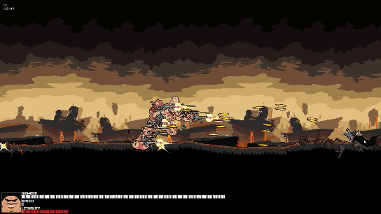

GAMES
In my free time, I enjoy developing video games. I usually create little prototypes rather than full products, as it's more of a hobby for me. Occasionally, I have some larger-scale projects that take a bit longer. Currently, my main project is Infinitower.
Generally, I am responsible for programming, game design and sometimes the art too. I've collaborated on many projects with talented developers from all over the world, most often on short-spanning game jams.
This page lists some of the projects I'm most proud of. Please look around!
Generally, I am responsible for programming, game design and sometimes the art too. I've collaborated on many projects with talented developers from all over the world, most often on short-spanning game jams.
This page lists some of the projects I'm most proud of. Please look around!

Infinitower is my ongoing project where I aim to develop mostly anything from scratch, using C++ and only the SFML-2 framework for rendering and keyboard input capabilities.

A game made in 72 hours where you endlessly go through a procedurally generated world, taking over enemies before your time runs out.
Here, we worked with a team of 5, where I was mainly responsible for coding and game design.
Click here to head to the download page!

A series of prototypes developed with artist and game designer Chariospirale. Here, my goal was to achieve a more seamless and natural-looking world. The goal is to explore a mysterious world as a dog warrior to find your missing bone.

A game made in 72 hours where you explore procedurally generated planets to collect fuel and find your way home before the monsters get you. Here, I worked together with artist and game designer Chariospirale, and we focused on designing a unique game-loop which consists of resource gathering and low-input real-time strategy through group building.
Click here to head to the download page!

A game made in 72 hours where you explore a world as a group of followers carrying around a mysterious casket. My goal here was to play around with the idea of the playable character, controlling a small swarm rather than an individual actor.
Click here to head to the download page!

A game made in 72 hours where you survive your way through a hostile world and assimilate body parts to grow stronger. My goal was to expriment with how movement and character design/progression could be modularized. Given more time, I would have loved to implement some sort of modular IK solver system. Here, we worked with a team of 5, collaboratively developing and designing the game from scratch.
Click here to head to the download page!
A game made in 72 hours where you survive your way through a hostile world and assimilate body parts to grow stronger. My goal was to expriment with how movement and character design/progression could be modularized. Given more time, I would have loved to implement some sort of modular IK solver system. Here, we worked with a team of 5, collaboratively developing and designing the game from scratch.
Click here to head to the download page!